Sheeternetes is a container orchestrator in which a Google Sheet plays the role of etcd and the control loop is written in Apps Script. Until now it was a teaching model. The spreadsheet scheduled and healed containers, but the containers themselves ran on other people's computers, wherever our agent was installed. This weekend Sheeternetes took its first production workload. KUBER KOMBAT, the bot that runs quiz battles in a Kubernetes community chat, moved out of a Kubernetes cluster and into a Sheeternetes pod. The pod's code lives in cells, the spreadsheet executes it itself, the season's videos sit in cells as base64, and every vote from a participant becomes a row in its own tab.
Here is why we had to teach the control plane to run pods on its own, which Google limits we found by trial and error, how storage in cells and vote counting work, and which bug the real spreadsheet caught while every test was green.
Why put a bot in a spreadsheet at all
Sheeternetes and its neighbors at the SNCF started as a joke in a chat, but over a couple of months they turned into a study of how malleable Kubernetes really is. We want to know which of its ideas stand on their own and survive a move to any medium, and which exist only because Linux, containers and etcd happen to be standing around them. A spreadsheet is a surprisingly good lab for that. You cannot hide complexity behind ready-made libraries, so every Kubernetes concept has to be rebuilt from cells, formulas and a couple dozen Apps Script functions. And whatever you build, you can see: the cluster's state is something you simply open and read.
Before this story, Sheeternetes had never run a single workload anything depended on. Containers with nginx and DOOM look great in a demo, but nobody is upset when they fall over. Then someone in the community chat asked me straight out: could you run a whole bot in the spreadsheet? Not just keep its settings there, but move the entire process, its state, its files and the participants' votes, and have it honestly run a season in front of real people.
There was an obvious candidate. KUBER KOMBAT runs battles in the community chat: it posts a cartoon and a poll, a day later it posts the breakdown of the right answer and the leaderboard, and at the end it announces the results. Season three is called "Shturval Incorporated" and is about network incidents, from twisted pair and TCP to conntrack, DNS, NetworkPolicy and eBPF in the CNI. It has seven tickets, one a day. The previous bot was an ordinary Python process in a Kubernetes cluster: it pulled updates from Telegram with long polling and kept its state in a file on a persistent volume.
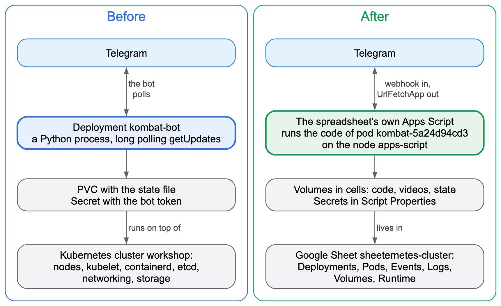
What a bot needs to live
Before moving anything, I wrote down what a platform has to provide for a bot like this to live on it. The list came to eleven items, and every one of them is familiar to anyone who has run a service on Kubernetes.
The bot needs state that survives a restart: who voted for what, which tickets have been posted, which breakdowns are out. Exactly one instance must run, because two bots running at once would post every ticket twice and keep two diverging copies of the leaderboard. The bot token has to be stored where nobody can see it, neither in the spreadsheet nor in the logs. Settings such as the chat ID and the mode of operation have to change without touching the code. Eight videos, almost ten megabytes in total, have to be stored somewhere and served on demand. You need to run a one-off command, say "start the season now", and to pause the bot without losing its state. A crashed bot has to restart, but without hammering Telegram in an endless loop. For Telegram to deliver votes on its own, the bot needs a public HTTPS address. You need logs, including the logs of a crashed instance, and clear limits on resources and running time.
Then I honestly checked the list against what the Sheeternetes ecosystem could already do. Only two items were fully covered: a public HTTPS address, and settings, the latter only in the on-prem edition. Secrets existed, but they were stored as base64, which is to say in plain text, and the token traveled in the query string. Exactly-one-instance was only partly guaranteed. When a pod moved to another node, the new instance started before the old one stopped, so for about forty seconds both were running. And if the agent on a node died while its container kept running, the cluster brought up another copy. For a bot, that means double posts. There were restarts, but no growing pause between attempts, and there were false restarts whenever a node's heartbeat glitched. Pods had no volumes at all: the Sheetstor storage did not attach to pods, and a host directory tied a pod to one machine. There were no one-off jobs and no logs from the previous container.
The conclusion was a boring one: a pod like this needs its own computer with Docker and our agent, and the spreadsheet stays a control panel. Then someone asked whether we could do without a computer altogether and do everything inside Sheeternetes itself. That question shaped the rest of the work.
The idea: let the control plane run the pods
A Google Sheet comes with a compute engine of its own. The Apps Script project bound to the spreadsheet already serves as the Sheeternetes API server and control loop. It can make network requests, hold a lock, store properties, run on a timer and answer HTTP requests as a web app. Teach it to run a pod's code as well, and the bot no longer depends on any machine except Google's servers.
The catch is that Apps Script cannot run containers. It runs JavaScript, so a pod in such a cluster becomes a JavaScript module rather than an image. Here an idea that has long existed in real Kubernetes came in handy. The virtual-kubelet project lets you register a node in a cluster that is backed not by machines but by a cloud serverless platform, and the cluster schedules pods onto it just as it would onto ordinary nodes. We did the same thing inside the spreadsheet: the Apps Script project registers itself as a node named apps-script, and the scheduler and the control loop have no idea that pods on this node work differently.
Before designing anything, we had to check that Google would let us do this at all.
Experiments on real Google
Every check below ran on Google's real servers and a real bot. The Apps Script emulator we run our tests against would not have helped here: we needed to test Google's actual behavior, and an emulator only repeats what we already know about it.
Code from a string runs, async code doesn't
The pod's code lives in cells, so Apps Script has to execute it from a string. I wrote a small project that tries different approaches and returns the results as JSON. A plain eval computed 1+2, the Function constructor built a function from a string and multiplied six by seven, and code from a string could see the built-in Apps Script services for network requests, locks and properties. A pod module in the exact form we planned to store it loaded and answered.
Google forbade one approach: you cannot build an async function from a string, because Apps Script says calling .constructor on a function is prohibited. Hence the runtime's first rule: pod handlers are synchronous. For the bot this is no limitation, since every request to Telegram in Apps Script is synchronous anyway.
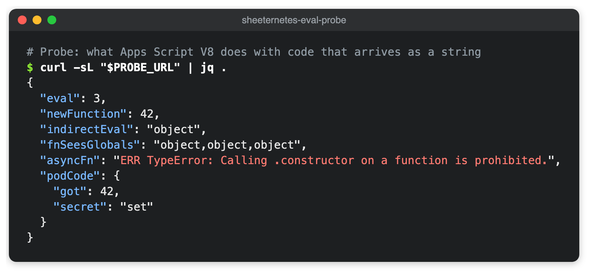
The probe's code
function probe_() {
const r = {};
const t = (k, f) => { try { r[k] = f(); } catch (e) { r[k] = 'ERR ' + e; } };
t('eval', () => eval('1+2'));
t('newFunction', () => new Function('a', 'b', 'return a*b')(6, 7));
t('indirectEval', () => (0, eval)('typeof SpreadsheetApp'));
t('fnSeesGlobals', () => new Function('return [typeof UrlFetchApp, typeof LockService, typeof PropertiesService].join(",")')());
t('asyncFn', () => typeof Object.getPrototypeOf(async function(){}).constructor('return 1'));
t('podCode', () => {
const src = 'exports.handle = (ev, env) => ({ got: ev.n * 2, secret: env.SECRET ? "set" : "unset" });';
const mod = { exports: {} };
new Function('exports', 'module', src)(mod.exports, mod);
return mod.exports.handle({ n: 21 }, { SECRET: 'x' });
});
return r;
}Permissions that Google infers from the source
Apps Script decides on its own which permissions a project needs. It reads the source code and, when it sees, for example, a call to the network service, asks the owner to allow access to external URLs. A pod's code lives in a cell and is nowhere in the project's source. So it will never request a single permission by itself, and everything pods might need has to be declared up front in the project manifest.
We learned this the hard way. As soon as a network request was added to the project, the web app started answering anonymous clients with an "Access Denied" page, and messages from Telegram stopped arriving. The new permission revoked the owner's earlier consent, and until the owner consented again, Google simply shut the app. So now every permission is declared in the manifest from the start, and the cluster owner approves them once during installation.
A work domain versus anonymous web apps
Telegram delivers updates to the bot's address without any authorization, so the web app has to accept anonymous requests. I brought up the first cluster in a Google Workspace work account and got the same "Access Denied" page: domain administrators can forbid anonymous access to web apps, and in our domain it is forbidden. A personal Google account has no such restriction, so the cluster the bot lives in runs under a personal account.
Telegram doesn't like redirects
The most important finding concerned the webhook response. The usual way to return text from an Apps Script web app, ContentService, does not answer right away. It first sends a 302 redirect to another address where the result is waiting. Browsers and curl follow it without complaint, but Telegram treats such an answer as an error. I sent the bot three messages, and a minute later Telegram reported that the webhook had responded incorrectly. Four updates were waiting in the queue, and the probe had counted six deliveries from Telegram for those three messages.
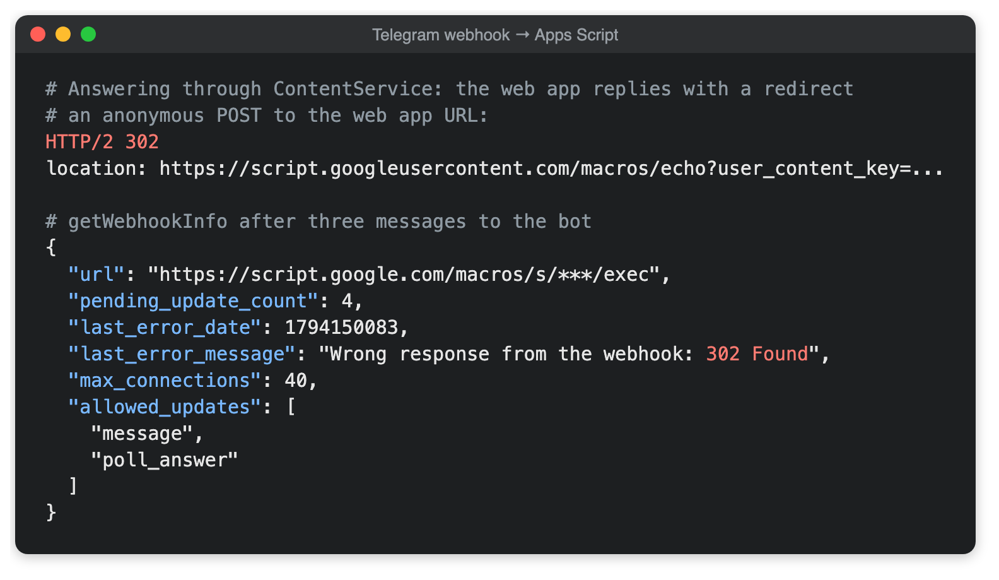
The way out was in the neighboring service. HtmlService, which is meant for HTML pages, answers 200 immediately, with no redirect. I switched the handler over to it and the queue drained: each of five updates reached the probe exactly once, and right after them a poll vote arrived through the same webhook.
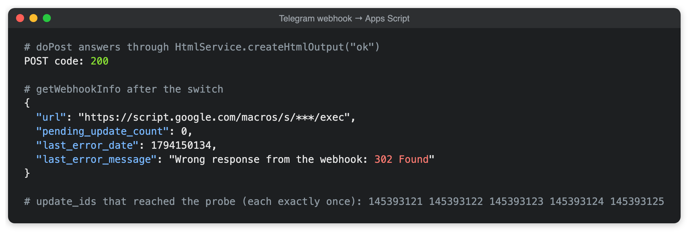
Notice in the screenshot that the last-error message in Telegram's answer stayed the same. Telegram keeps it as history; the empty queue is what tells you about the current state.
Later this annoyance became a useful tool. The runtime answers 200 when an update has been processed, and deliberately answers with a redirect when it wants Telegram to send the update again: when the handler crashed or the cluster is busy. A platform quirk turned into a way to ask for redelivery.
The way back
The last check was the outgoing request. The script took the token from the project properties, which are invisible in the spreadsheet, sent a poll to a test chat through the network service, and got a 200 from Telegram with the message number. After that it was clear the bot would fit into the spreadsheet entirely: incoming votes arrive by webhook, outgoing messages leave as network requests, and everything in between can be kept in cells. In the test chat that poll looked like any other message from the Kuber Kombat bot, and nothing about it gave away that a spreadsheet had sent it.
How it works
A node that lives inside the spreadsheet
On installation the cluster registers the Apps Script project as an ordinary node with the label and taint runtime=script. A deployment with runtime: script automatically gets a selector and a toleration for that label. So the scheduler places such pods only on apps-script and will never put an nginx container there. Replicas, rollouts, events and scaling work the same as for any other deployment.
The job of the node agent is done by Apps Script triggers: once a minute while pods have work in the next half hour, and once every half hour the rest of the time. The trigger renews the node's lease, runs the reconcile loop when needed, moves pods into the right phases, and calls the pod's handlers for schedule slots whose time has come.
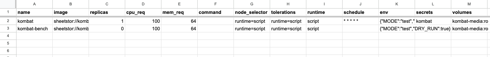
A pod's image is a file on a volume. The bot's deployment row says sheetstor://kombat-code/bot.js, meaning the file bot.js on the code volume. The same row lists the schedule, settings as JSON, the secret's name and the attached volumes. The module exports an event handler and separate functions for one-off commands. There are three kinds of events: a schedule slot has arrived, a webhook came in, or the owner called a function with skctl run.

In a cluster without Docker nodes, this design turned up one bit of untidiness. The demo nginx and redis deployments that the installer creates got pods with nowhere to run. Once those deployments were deleted, the pods went into Terminating and stayed in the tab forever: the node agent was supposed to stop them, and they had no node. Now the reconcile loop deletes Terminating pods that have no node, or whose node has vanished from the Nodes tab, and records an event. On the production cluster four such pods disappeared on the very first reconcile after the rollout.
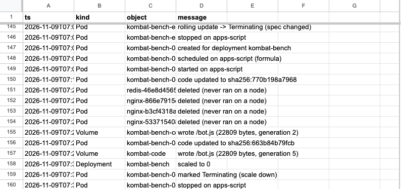
Exactly once
For the bot, the core requirement is never to do anything twice. A repeated breakdown in the chat looks sloppy, and a vote counted twice changes the final leaderboard. So every pod invocation, whether a schedule slot, a webhook or a one-off command, runs under the script lock. At any moment no more than one invocation runs in the whole project, which settles the question of a second bot instance right away: there is simply nowhere to run it.
Every invocation works as a transaction over the pod's state document. If the handler finishes successfully, the changes are saved; if it crashes, they are discarded. After every external action, such as a sent message, the bot saves its state immediately, so a later crash cannot make it post again.
Schedule slots are recorded in the same document with the same save. An Apps Script trigger fires unevenly: it can be late, and it can fire twice. So on every run it looks for the most recent due minute in the last quarter hour that has not yet been handled. Two overlapping firings, or one late one, end up as a single invocation per slot. I checked this on a test pod scheduled "every two minutes": every slot from 15:54 to 16:08 ran exactly once.
Webhooks get the same protection. Telegram redelivers if it does not get a 200, and keeps unacknowledged updates for up to a day. A pod can tag an event with a key, and a redelivery with the same key changes nothing, even if the first delivery crashed after it had already saved its result. If the same update crashes the handler three times in a row, the runtime sets it aside in a separate tab, records an event and tells Telegram everything was accepted, so one broken message cannot jam the queue.
How the runtime answers a webhook
| Situation | Answer | What the sender does |
|---|---|---|
| processed | HtmlService, 200 ok | considers it delivered |
| handler crashed, first or second time for this body | ContentService, 302 | retries |
| the same body crashed three times | 200 dropped, the body is saved to a separate tab, an event is recorded | stops retrying |
| the pod is paused or the lock is taken | 302 | retries later |
| wrong key in the URL | 200 forbidden | stops retrying |
The webhook URL is the web app's address with the deployment name and a random key. The key is kept in the project properties and rotated with skctl webhook kombat --rotate. The URL belongs to the deployment, not to the pod, so it survives restarts and code updates.
Secrets outside the cells
The bot token is not stored in any cell. Secrets live in the Apps Script project properties, so they are not in the spreadsheet's version history either, the same history Sheeternetes can restore a cluster from. You write a secret with skctl secret set, and the value is read from standard input so it never lands in your shell history. Everything the runtime writes to logs, events and API answers goes through a masker: a secret's value is replaced with asterisks, including in its URL-encoded form.
There was a very practical reason for this requirement. While taking the old bot apart, I found its token in the pod logs in Kubernetes. On a network error the requests library logs the full request URL, and in Telegram's API the token is part of the URL. That was the secrets item from our list, only discovered in a running system.
Volumes in cells
Sheetstor storage existed in the Sheeternetes ecosystem before, but it did not attach to pods. For the bot it was rewritten so that files live right in the cluster spreadsheet's cells. A cell holds 50,000 characters, and the Sheets API returns longer strings as an error. So a file is base64-encoded and cut into 49,000-character chunks, and each chunk becomes a row in the volume's hidden tab. Each chunk is prefixed with a tilde so the spreadsheet does not try to read it as a number or a formula.
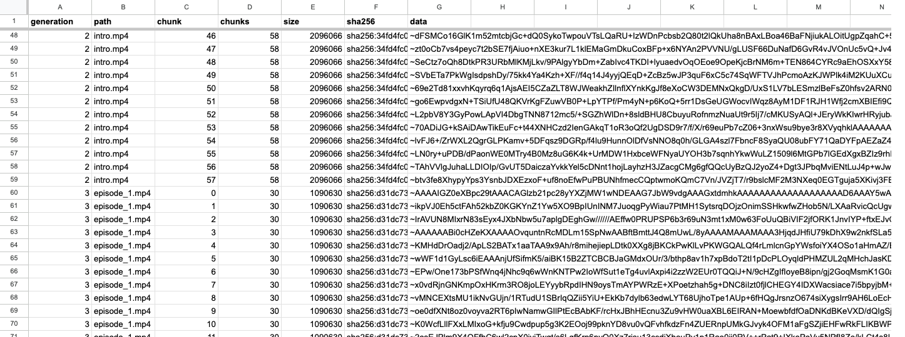
The season's intro video is 2,096,066 bytes. In base64 that is almost 2.8 million characters, or 58 cells. All eight of the season's videos plus the text file took 9.6 megabytes and about 260 cells, against a spreadsheet limit of ten million. Each video took eight to fourteen seconds to upload into the spreadsheet.
Writes are designed so that a failure halfway through breaks nothing. The new version of a file is appended in full as a new generation, and only then, under the lock, is the generation pointer in the registry tab flipped. A reader takes, for each file, the newest version not newer than the pointer and checks its SHA-256. If a write broke off before the flip, the previous version stays readable, and the next write cleans up the orphaned rows. Pod code is updated the same way: a new bot.js becomes a new generation, the next invocation already runs it, and a cluster event records the new checksum.
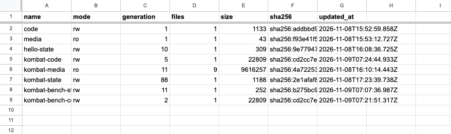
What a volume looks like inside, and how to check that the cells hold the very same file
The hidden tab sheetstor-<volume name> has one row per chunk: generation, path, chunk number, chunk count, file size, its SHA-256 and the data. For this post I compared the last cell of the intro video with the local file: its contents after the tilde match the base64 of the original file starting at position 57 × 49,000, and the SHA-256 in the row equals the checksum of the file on disk.
$ skctl volume ls kombat-media
PATH SIZE GENERATION SHA256
intro.mp4 2096066 2 sha256:34fd4fc054e9…
episode_1.mp4 1090630 3 sha256:d31dc73efbac…
…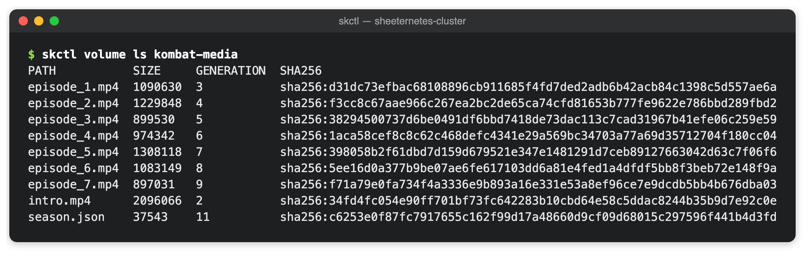
Videos are uploaded ahead of time and are not reprocessed at runtime. The first time the bot sends a video, Telegram returns a file ID, and the bot saves it keyed by the video's checksum. On later sends, for example to the main chat after a test run, the video does not have to be read back out of the cells and uploaded again.
Votes as a journal
Votes arrive in bursts, most of them right after a poll is posted. If every vote rewrote the whole state document, invocations would line up for the lock. So votes live separately, in an append-only journal. Every poll answer is one row in a hidden tab: one append under the lock and nothing more.
The current picture is computed from the journal: for every poll-and-participant pair, the record with the highest Telegram update number wins. A redelivery of the same update adds the same row again and changes nothing. You can see this in row ten of the journal screenshot: during a rehearsal, update 1201 arrived a second time, and the results stayed the same.
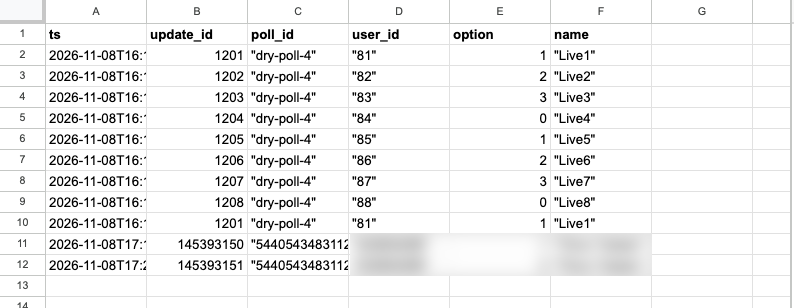
Before posting a breakdown, the bot closes the poll, and Telegram returns its own vote count for each option. The bot compares it with its journal and, if they disagree, records an event in the cluster so that a lost or extra vote does not go unnoticed. To stay under the Apps Script limit of thirty simultaneous executions, the bot's webhook is configured so that Telegram keeps no more than five connections open at once.
The time budget
A free Google account gets ninety minutes of Apps Script trigger time a day. The first version of the runtime read the Nodes, Deployments, Pods and Autoscale tabs on every idle firing. That took about 2.4 seconds and, running once a minute, ate roughly 58 of the ninety minutes before the bot had done anything at all.
The second version remembered, after each full pass, when it would next have work, and until then a firing read a single property and exited. By the runtime's own counter, such a firing averaged 0.15 seconds, and idling looked cheap. The project's Executions page said otherwise. Google counts an execution from the moment it starts, and about a second passes before the first line of the script, a second the script never sees. An idle firing really cost 0.6 to 1.5 seconds. The backstop reconcile every ten minutes took 9 to 22 seconds, because the control loop rewrites the Pods and Nodes tabs and waits for formulas to recalculate in a spreadsheet that holds 9.6 megabytes of video. On the night of November 9 the sleeping cluster spent about 143 seconds an hour, almost two thirds of the daily budget. The longest firing of that night, 59 seconds at 04:03 UTC, turned out to be an ordinary backstop reconcile: no rollouts, no API calls that minute, the spreadsheet was just answering slowly.
That led to two decisions. The cheapest firing is the one that never happens, so the one-minute trigger now exists only while there is work in the next half hour: a pod is awake or about to wake, the autoscaler is busy, or the reconcile loop has unfinished business. The rest of the time the cluster lives on a half-hour trigger, and it needs the node lease renewal and the backstop reconcile only once an hour. Any API call, any hand edit of the spreadsheet (caught by an on-edit trigger), and any request from a pod to wake it up bring the one-minute trigger back within seconds. The second decision concerns the backstop: it no longer runs the control loop for nothing. After every pass the runtime remembers a fingerprint of the Deployments, Pods and Nodes tabs and once an hour compares it with what is in the spreadsheet. The loop runs only if someone changed those tabs behind the API's back.
The bot, for its part, tells the runtime after each slot when to wake it. Between the evening ticket and the next day's breakdown it sleeps, and all that time the cluster gets by on two firings an hour: one full pass renews the lease and checks the fingerprint, the other reads one property and exits. On the night of November 10, by the runtime's own counter, an idle hour cost about two seconds, and with start-up time included, judging by the Executions page for the same firings, about six. That is under 3% of the daily budget, down from almost two thirds before the fix. The daily spend, including the number of idle firings, full passes and reconciles, is visible in the Runtime tab and in skctl get budget. Start-up time is not included in those numbers, so add about a second to each firing.
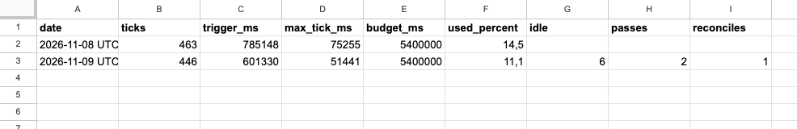
This design has limits, and they are worth naming once. Invocations inside the project run strictly one at a time, and each may last no longer than six minutes. The trigger fires roughly once a minute with some jitter, so the schedule is accurate to the minute. A free account gets ninety minutes of trigger time and twenty thousand outgoing requests a day. The webhook sender waits for the handler to finish, so handlers have to be short. For a bot with seven tickets all of this fits within the limits with room to spare, but you will not run a service answering thousands of users a second on a cluster like this.
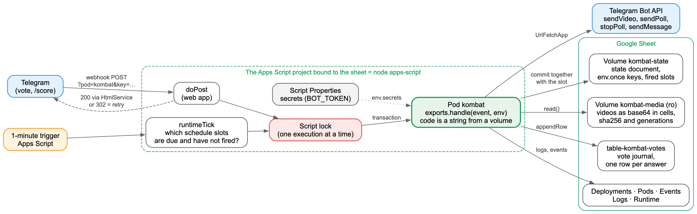
The production run
Before the season started, the bot had to go through the whole cycle on real Telegram. The bot's code has a test mode for this. It publishes the season in a separate chat on an accelerated schedule: three tickets instead of seven, a minute and a half apart instead of a day. The community's main chat is closed to the bot at the code level. Until the deployment's settings say prod, the bot refuses to post there, even if it is handed that chat's ID.
The season's texts were not rewritten by hand. The same Python code that served the old bot generated them and exported them into a file on a volume. The bot's test against a fake Telegram runs the accelerated season, checks the main-chat guard and compares every sent text with a reference byte for byte. There are 59 such checks, plus 36 tests for the storage and 52 for the runtime. Two rehearsals, in which the bot only logged its Telegram calls, ran an hour before the start, and at 20:18 Moscow time on November 8 the owner launched the season with a one-off command.
skctl run kombat -- launchThe command posted the intro video, the announcement and the first ticket with its poll, and from there the bot followed its schedule on its own. At 20:19 the first real vote came in. At 20:20 the bot closed the poll, reconciled its journal with Telegram's count, replied to the poll with the breakdown, posted the leaderboard and published the second ticket. At 20:21 the second vote arrived, followed by a breakdown and the third ticket, and at 20:22 came the last breakdown and the results. The whole season in accelerated mode took about five minutes.
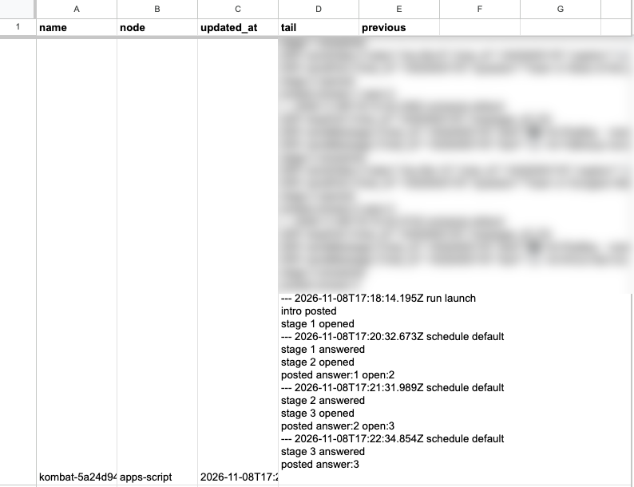
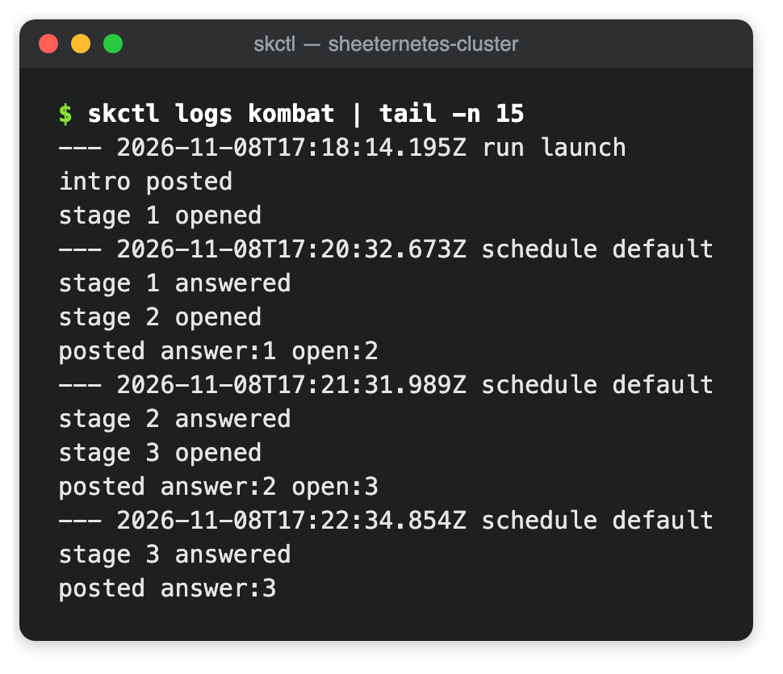
In the chat it looked just like the old bot. First came the intro cartoon with a caption, then the season announcement, whose footer now says the bot runs on a Sheeternetes cluster. Each ticket was a short cartoon with a non-anonymous poll under it. The breakdown came as a reply to the poll, so it sat right next to the question, and the bot followed it with the leaderboard. The /score command in the chat answered a participant's message with their points and rank, and the last breakdown ended with the battle results and the winner's name. Every one of these steps left a trace in the spreadsheet: an invocation in the pod log, a vote in the vote journal, a completed-step mark in the state document.
After the run, the status command showed every step done, and the votes per ticket matched Telegram's count: the first and second tickets got one vote each, the third none. The reconciliation found no discrepancies, and the pod had zero restarts and not a single error.
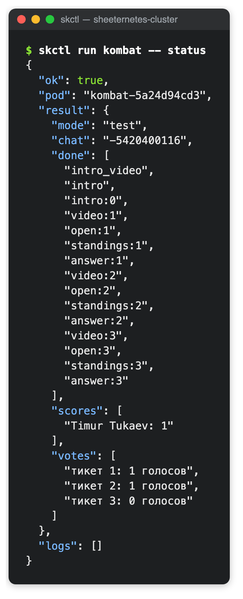
The numbers
Answering a vote, meaning the path from the webhook request to the 200 response, took 2.4 to 4 seconds in rehearsal, and the /score command took 8.3 seconds. The time went not into counting but into reading. Every /score read the volume registry three times, then the state document, the season's text file and the entire vote journal. Now the registry is read once per invocation, volumes are mounted on first use, and code, state and text files are cached in CacheService under a key derived from the volume's content fingerprint, so any write to a volume makes the old cache entry obsolete on its own. The bot caches the vote picture by the journal's row count: the journal only grows, so the same length means the same picture. On a dry-run copy of the bot, where Telegram is never called, the /score answer dropped from 6.1–7.9 to 2.5–4.1 seconds, and the vote answer from 2.5–3.6 to 1.9–3.3 seconds. The remaining couple of seconds go into starting the web app, reading the Deployments and Pods tabs (without which you cannot be sure the pod is running), and the journal write itself. The one-off season launch command took 23 to 39 seconds in rehearsal: it sends four messages and saves state several times.
The longest trigger firing of the day was the one in which the bot sent videos: 75 seconds. In it the spreadsheet stitches dozens of cells back into a file, checks the checksum and uploads the file to Telegram. That leaves plenty of headroom under the six-minute limit per execution, and repeat sends of the same video go out by the saved file ID.
For November 8, the runtime's own counter showed 14.5% of the daily trigger budget. That day included the second rehearsal, the production run and the evening's idle time, and the firings' start-up time is not in the counter. Idle now costs under 3% of the budget per day, so nearly all of the budget is left for real work. The heaviest step of the season, sending a video, took 75 seconds, so the season has many times the headroom it needs.
Where these numbers come from
The budget counter appeared in the runtime at 16:16 UTC on November 8, so the video uploads and the first rehearsal are not in it. Right after the production run, skctl get budget showed 76 firings, 401 seconds and 7.4%. By the end of the day the counter reached 463 firings, 785 seconds and 14.5%.
Times including start-up come from the Apps Script project's Executions page: I exported every execution since the cluster was created and summed the runtimeTick durations by hour. From 19:00 on November 8 to 04:00 on November 9 UTC, every hour had 60 firings with a total duration of 134 to 160 seconds. After the fix, the page showed that from 07:34 to 09:00 and from 09:47 to 11:47 on November 9 only the half-hour trigger ran, at 4.7 to 13.4 seconds per firing. Each of those was a full pass, so I moved the lease and the backstop to once an hour. On the night of November 10, the runtime counter, which I polled once a minute with read requests that do not wake the trigger, showed two firings an hour: a pass at 1.7–2.1 seconds and an idle one at 0.09 seconds.
Webhook latencies were measured on a separate deployment, kombat-bench: the same bot code in dry-run mode, with no secret, its own state volume and its own vote journal. A script sent six to eight votes to its webhook, then four to eight /score commands, and measured curl time to HTTP 200 including Google's redirect. The before and after measurements ran on the same deployment half an hour apart.
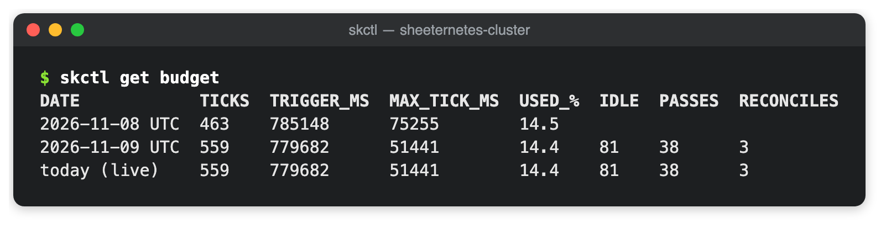
The real spreadsheet found the bug
All Sheeternetes tests run against an emulator of Apps Script and Sheets, and in the emulator the formula scheduler worked flawlessly. In Sheeternetes a formula in the Pods tab assigns a pod to a node: it walks the nodes, checks labels, taints and free resources, and writes the chosen node's name into the chosen column. If the formula returns an error, the cluster switches to the fallback scheduler in Apps Script and records an event.
On the production cluster, that event appeared on every full pass. From the first pass on November 8 to the morning of November 9, the line "formula column returned an error -> script fallback for this pass" landed in the Events tab 84 times. The bot noticed nothing: the fallback scheduler put its pod on the same node, and the season ran without a hitch.
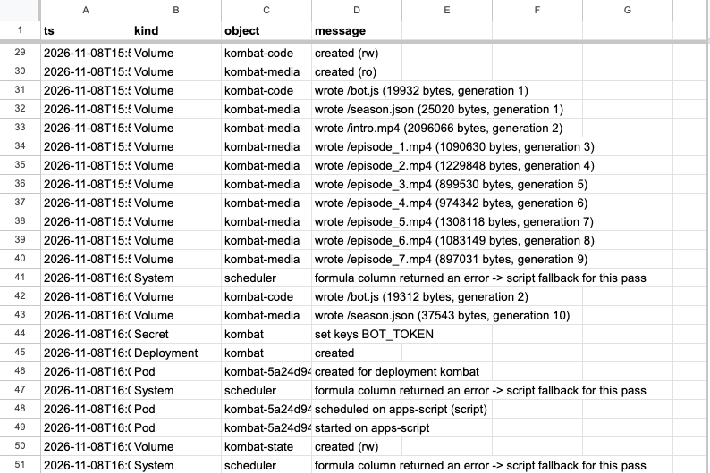
The cause turned out to be the spreadsheet's language. The cluster spreadsheet was created with a Russian locale, and in locales where the decimal separator is a comma, function arguments are separated by semicolons. The method the script uses to write a formula into a cell parses the text by the spreadsheet's locale rules. A formula written with commas, the way the English locale expects, becomes a parse error in a Russian spreadsheet. The emulator only knew the English locale, so it accepted such a formula without complaint.
The fix asks the spreadsheet itself which syntax it speaks. Once per locale, the script writes =SUM(1,2) into a scratch cell. In the English locale that is the sum of two numbers and gives 3; where the comma separates the fractional part, it is the single number 1.2. From the answer the script knows which syntax is needed and translates formulas: commas between arguments become semicolons, and commas between array columns become backslashes. Quoted strings are left alone.

The emulator now knows about locales too: a formula that cannot be parsed in the given locale becomes an error, just as it does in Google. The whole control-loop test suite in CI also runs in the Russian locale, and a dedicated test checks the exact formula text for English, British, Russian and German spreadsheets. After the fix rolled out, the fallback-scheduler line never appeared in the events again, and the formula in the chosen column picks the apps-script node for the bot's pod.
So that the next bug of this kind gets caught by something other than a production spreadsheet, skctl gained a selftest command. The cluster's web app creates a temporary spreadsheet in the owner's Drive for each locale, English and Russian by default, sets up the tabs, runs a reconcile pass with the formula scheduler and the autoscaling formulas, checks what the cells computed, and moves the spreadsheet to the trash. The check runs as the cluster owner, so no Google credentials have to live in CI. Otherwise we would have had to put either the cluster token, which gives full control over it, or a key with Drive access into GitHub. The first run passed for en_US and ru_RU, and for de_DE and ja_JP as well, at 14 to 16 seconds per locale.
$ skctl selftest
en_US: PASS in 14 s (trashed)
ok formula syntax detected (comma)
ok the formula scheduler placed every pod (no script fallback)
ok the chosen column computed node names, no errors
ok formula and Apps Script scheduler agree
ok node_selector and taints are honoured
ok autoscale formulas compute (cpu 80%, desired 5, ScalingUp)
ok timestamps survive a round trip through a cell
ru_RU: PASS in 16 s (trashed)
ok formula syntax detected (semicolon)
…
selftest passedHow a formula is translated into the locale's syntax
const FORMULA_SYNTAX_PROBE = '=SUM(1,2)'; // en_US: 3; decimal-comma locales: 1.2
function toSemicolonSyntax(formula) {
let out = '', quote = '';
const nest = [];
for (const ch of formula) {
if (quote) { out += ch; if (ch === quote) quote = ''; continue; }
if (ch === '"' || ch === "'") quote = ch;
else if (ch === '(' || ch === '{') nest.push(ch);
else if (ch === ')' || ch === '}') nest.pop();
out += ch === ',' ? (nest[nest.length - 1] === '{' ? '\\' : ';') : ch;
}
return out;
}The probe's result is cached for six hours per locale, so the probe does not repeat on every pass.
This bug shows nicely why Sheeternetes needs a real workload. An emulator checks only what we already know about the platform; a live spreadsheet with a live bot checks what we never thought of. Without the bot, the cluster would have kept running on the fallback scheduler, with a line nobody reads showing up in its events every ten minutes.
What it means
The main result of this work is that a pod no longer needs a single computer. In Sheeternetes, a pod has stopped being necessarily a container. A node is anything that can register, renew a lease and move pods from phase to phase, and a pod is anything such a node can execute. The control loop, the scheduler, deployments, events and logs stayed the same and never noticed that the pod is now a JavaScript function stored in a cell and executed by the same script as the control plane itself. For our study of how malleable Kubernetes is, that is a strong argument: the model of "desired state, node, pod, reconcile loop" turned out to be broader than the containers it is usually demonstrated on.
The practical result is simpler. KUBER KOMBAT now has no server, no cluster and no disk. Its code, videos, state and votes are in a single spreadsheet you can open and read. The secret is kept in one place, and every step the bot takes is visible in the Events and Logs tabs. Next, the bot has seven tickets on the original schedule ahead of it in the community's main chat. The first message will go out as a one-off command, and the bot will do the rest on its own, waking up for each scheduled event.
The sources of the runtime, the storage and skctl are open and shipped in Sheeternetes v0.0.0.0.0.5 "Extensions → Apps Script", and the improvements after the first run (the two triggers, the fingerprint backstop, cleanup of node-less pods, the caches and skctl selftest) shipped in v0.0.0.0.0.6 "On change and every hour". The runtime is documented in detail in docs/script-runtime.md, which also has step-by-step cluster installation and an example pod that answers a webhook and counts schedule slots. Everything else that shipped across the foundation and its friends over the same days is in Eighteen releases in two days.
Links
- Sheeternetes: github.com/sncfoundation/sheeternetes
- The pod runtime and volumes in cells: docs/script-runtime.md
- Changes: CHANGELOG.md
- Storage in cells: pull request #69; runtime: #72;
skctland docs: #71; locale-aware formulas: #74; idle cost, pod cleanup, caches andselftest: #75, #76, #77; releases: v0.0.0.0.0.5, v0.0.0.0.0.6 - The SNCF: sncfoundation.github.io